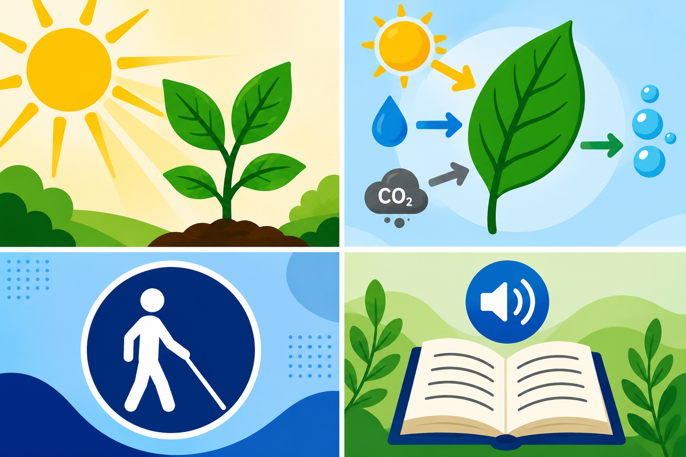

Bem-vindo!
Este site foi desenvolvido para ensinar o conteúdo de Fotossíntese de maneira acessível e inclusiva para estudantes com deficiência visual. Aqui você encontrará textos claros, descrições de imagens, áudios explicativos, atividades e recursos que facilitam a aprendizagem.
Tema
Fotossíntese
Público-alvo
Alunos do 7º ano do Ensino Fundamental com deficiência visual (cegueira ou baixa visão).
Objetivos de Aprendizagem
- Compreender o que é a fotossíntese.
- Identificar os elementos necessários para que ela aconteça.
- Explicar a importância da fotossíntese para os seres vivos.
- Relacionar a fotossíntese com a produção de oxigênio e alimentos.
Justificativa
A fotossíntese é um dos processos mais importantes da natureza, pois permite que as plantas produzam seu próprio alimento e liberem oxigênio para a atmosfera.
Este site foi desenvolvido seguindo princípios de acessibilidade, utilizando recursos como audiodescrição, textos alternativos e conteúdo compatível com leitores de tela, garantindo que estudantes com deficiência visual tenham acesso ao conhecimento em igualdade de condições.
Módulo 1: Bem-vindos ao Nosso Espaço de Aprendizagem
Olá, estudante! Prepare-se para uma jornada incrível para descobrir como a natureza funciona.
O Superpoder das Plantas: A Fotossíntese
Você sabia que as plantas conseguem produzir a sua própria comida? O nome desse "superpoder" é fotossíntese, um dos processos mais fantásticos e importantes do nosso planeta.
É através da fotossíntese que as plantas utilizam a energia da luz do Sol, a água e um gás invisível chamado gás carbônico para criar o seu alimento. E a melhor parte de tudo isso? Durante esse processo, as plantas liberam na atmosfera o oxigênio, que é o ar essencial que todos nós respiramos para viver!
Um Espaço Feito Especialmente para Você
Este site foi planejado e construído com muito carinho para que todos possam aprender com total autonomia. Acreditamos que a educação deve ser acessível e igualitária. Para que a sua experiência de aprendizagem seja a melhor possível, este ambiente conta com:
- Textos claros e diretos, para facilitar os seus estudos.
- Audiodescrição detalhada das imagens, garantindo que você compreenda todos os detalhes visuais.
- Compatibilidade total com leitores de tela, permitindo uma navegação simples e estruturada.
- Materiais em áudio, para que você possa escutar o conteúdo de onde estiver.
Esperamos que este site desperte a sua curiosidade sobre o meio ambiente e ajude você a entender como a fotossíntese é fundamental para a manutenção da vida na Terra.
Aproveite o conteúdo e vamos aprender juntos!
Clique no botão para o sistema ler o texto.

Descrição da imagem (audiodescrição)
Ilustração de uma planta verde sob a luz do sol. As raízes absorvem água do solo. As folhas recebem gás carbônico do ar. A planta utiliza a luz do sol para produzir glicose (alimento) e liberar oxigênio para a atmosfera.
Leitor de Tela
Este site é compatível com leitores de tela. Navegue utilizando as teclas de atalho do seu leitor para uma melhor experiência.
Página 3 – Módulo 2: Como acontece a Fotossíntese?
A fotossíntese ocorre principalmente nas folhas das plantas. Ela acontece em quatro etapas:
- A planta absorve água pelas raízes.
- As folhas recebem gás carbônico.
- A luz do Sol fornece energia.
- A planta produz alimento e libera oxigênio.
Curiosidade: Uma única árvore adulta pode produzir oxigênio suficiente para beneficiar muitas pessoas ao longo do ano.
Página 4 – Módulo 3: Importância da Fotossíntese
A fotossíntese é essencial para a vida na Terra porque produz oxigênio, fornece alimento para as plantas e sustenta toda a cadeia alimentar.
Sem esse processo, os seres vivos não teriam oxigênio suficiente para respirar.
Página 5 – Curiosidades
- As plantas fabricam seu próprio alimento.
- A Amazônia possui uma enorme diversidade de plantas que realizam fotossíntese.
- O oxigênio liberado pelas plantas é fundamental para a vida.
Página 6 – Atividades
Questões Objetivas
Questões Discursivas
1. Explique, com suas palavras, por que a fotossíntese é importante.
2. Como a fotossíntese contribui para a vida na Terra?
Atividade Prática
Ouça o áudio da aula e grave uma resposta explicando como acontece a fotossíntese.
Desafio Inclusivo
Depois de ouvir a explicação, grave um áudio de até dois minutos contando todas as etapas da fotossíntese.
Página 7 – Tecnologias Assistivas
Este site utiliza as seguintes tecnologias integradas e diretrizes:
- audiodescrição: narrações estruturadas para contextualização;
- textos alternativos nas imagens: tags 'alt' descritivas legíveis por máquinas;
- compatibilidade com leitores de tela: código limpo estruturado semanticamente.
Página 8 – Desenho Universal para Aprendizagem (DUA)
Múltiplas formas de representação:
O conteúdo é apresentado em texto, áudio e imagens com descrição.
Múltiplas formas de ação e expressão:
O estudante responde por escrito ou por gravação de áudio.
Múltiplas formas de engajamento:
São utilizados curiosidades, atividades interativas e desafios para motivar a aprendizagem.
Página 9 – Referências
- Livro de Ciências do 7º ano.
- Ministério da Educação.
- Imagens de bancos gratuitos com descrição.
- Google Sites.
- Google Forms.